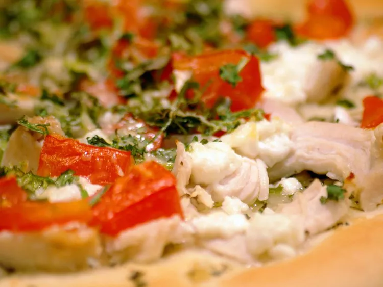

This garlic chicken pizza is a delicious homemade meal! Butter garlic sauce, chicken, tomato, ricotta, and Parmesan are baked together for a delightfully light-tasting dish.
Place chicken breast in a saucepan with enough water to cover. Bring to a boil, and cook until no longer pink, about 20 minutes. Drain and cool slightly, then cut into strips.
Meanwhile, in a small skillet over medium heat, melt butter with garlic, onion, and basil. Pour into a chilled dish to cool, and refrigerate until set.
Preheat the oven to 350 degrees F (175 degrees C).
Roll out pizza dough, place onto a pizza pan or other baking sheet, and spread herb butter over surface using the back of a spoon. Arrange chicken on top, then dot with ricotta cheese. Top with tomato slices, cilantro, and Parmesan cheese.
Bake for 15 to 20 minutes in the preheated oven, until crust is browned and the center is cooked through.